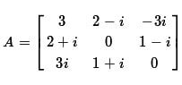

수학과는 아닙니다만, 선형대수를 즐기는 편인데 복소행렬의 고유기저를 구하기 직전에 공액이 쏟아져 나왔네요. 신호도 없이..
더욱이, 일반수학 이후에 보지도 못한 삼각함수들이.. -ㅅ-a;
몽글몽글.
자기 자신과의 norm이 1이지만 다른 벡터와의 norm이 0이 아닌 걸 보면 분명 직교정규기저는 아닙니다만...
뭐어, 각설. 벌써 해가 중천입니다. 식사는 하셨는지요.

수학과는 아닙니다만, 선형대수를 즐기는 편인데 복소행렬의 고유기저를 구하기 직전에 공액이 쏟아져 나왔네요. 신호도 없이..
더욱이, 일반수학 이후에 보지도 못한 삼각함수들이.. -ㅅ-a;
몽글몽글.
자기 자신과의 norm이 1이지만 다른 벡터와의 norm이 0이 아닌 걸 보면 분명 직교정규기저는 아닙니다만...
뭐어, 각설. 벌써 해가 중천입니다. 식사는 하셨는지요.
수학과는 아닙니다만, 선형대수를 즐기는 편인데
ㄷㄷ

이걸 어떻게 잊고 있었는데..
눈을 떴구나 수갤로 들어오거라
그래도 수간갤은 좀
그니까 냄비에 저 수식을 넣고 끓이면 계란탕이 된다는 거지...?
아이젠벡터 구하게?
이런 걸 보여주고 식사는 왜 물어봐
ㅅㅅ니까
원본도 가져와줘 제발
설명해줘
대충 후장자위하다가 장액나왔다는 글 패러디
원본은 게이새끼가 후장자위를 하다 뭔가 액이 나와서 맛을 보았더니 암맛도 안느껴지더라
하는 내용임
우왓 ㅡㅅㅡ;;
그 글 볼때마다 느끼지만 맛은 왜 봤는지 참..
뭔말인지는 모르겠는데 일단 쌀게

ㅡㅅㅡa
에르메스
미친사람아니야 이거
?
선형대수하다 돌았나
시험기간인가
아이시팔
아이 싯팔
답12 제미니가 풀어 줌
난 아직도 행렬이 너무 어려워
공액 진짜 처음 들어봐서 뭔가했네
누군가 원본 올려줘
(찐따특